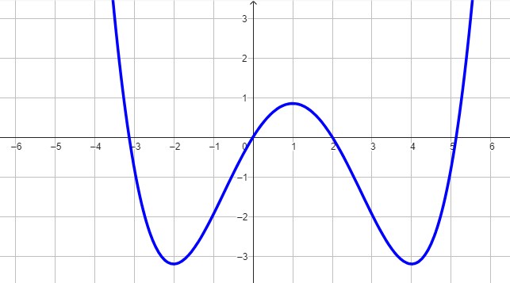

Compiti per casa
Derivate fondamentali
-
\(\left(ln(x)\right)' = \dfrac{1}{x}\,\,\,\,\)
-
\(\left(e^x\right)' = e^x\,\,\,\,\)
-
\(\left(sin(x)\right)' = cos(x)\,\,\,\,\)
-
\(\left(cos(x)\right)' = -sin(x)\,\,\,\,\)
-
\(\left(b\right)' = 0\,\,\,\,\,\)
-
\(\left(x^{\alpha}\right)' = \alpha\,x^{\alpha - 1}\,\,\,\) con \(\alpha \in \mathbb{R}\,\,\,\,\,\)
-
\(
\begin{align*}
\left(tan(x)\right)' &= \dfrac{1}{cos^2(x)}
\\\\
&= 1 + tan^2(x)
\end{align*}\,\,\,\,
\)
Regole di derivazione
-
\(\left(c\,f(x)\right)' = c\,f'(x)\)
-
\(\left(f(x) + g(x)\right)' = f'(x) + g'(x)\)
-
Regola di Leibniz
\(\left(f(x) \cdot g(x)\right)' = f'(x)\,g(x) + f(x)\,g'(x)\)
-
Derivata del rapporto di due funzioni 🔥
\(\left(\dfrac{f(x)}{g(x)}\right)' = \dfrac{f'(x)\,g(x) - f(x)\,g'(x)}{\big[g(x)\big]^2}\)
Esercizio 1
\[
\left[\dfrac{3x - 1}{4x + 1}\right]'
\]
Soluzione: \(\,\,\, \dfrac{7}{(4x + 1)^2}\)
Esercizio 2
\[
\left(\dfrac{x}{ln(x)}\right)'
\]
Soluzione: \(\,\,\, \dfrac{ln(x) - 1}{ln^2(x)}\)
Esercizio 3
\[
\left(\dfrac{x^3}{cos(x)}\right)'
\]
Soluzione: \(\,\,\, \dfrac{x^2 \cdot (3\,cos(x) - x\,sin(x))}{cos^2(x)}\)
Esercizio 4
\[
\left(x + \dfrac{2\,ln(x)}{x^2}\right)'
\]
Soluzione: \(\,\,\, 1 + \dfrac{2\,(1 - 2\,ln(x))}{x^3}\)
Esercizio 5
Stabilire per quali valori della \(x\) la derivata della funzione rappresentata in grafico assume
valori negativi.
